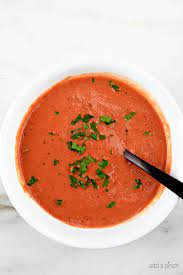

Tomato Soup

This tomato soup is so delicious you may just soil your pants
Probably my favourite dish in the world. Tomato soup for president!
Ingredients
- Tomato paste
- Olive oil
- Chicken of beef stock
- Garlic
- Fresh basil
- Heat up a pan, pour some olive oil
- Add chopped garlic and some basil, fry for a brief moment, stirring
- Add tomato paset, fry on low heat for 15-20 minutes
- In a seperate pan, heat up the stock
- Add fried paste to the stock, bring to boil
- Add basil, simmer for 10 minutes